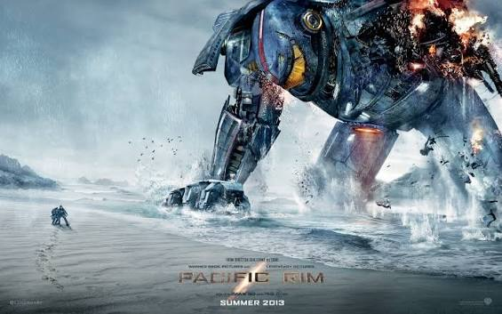

What the Movie Is About
Pacific Rim takes place in a world where giant monsters called Kaiju come out of the ocean and attack cities. To fight back, humans build giant robots called Jaegers that are controlled by two pilots working together. The story follows Raleigh Becket and Mako Mori as they prepare to fight the monsters and help save humanity.
What I Liked
My favorite part of the movie is the fights between the Jaegers and the Kaiju. The robots are massive and the sound effects make every punch seem powerful. I also like the designs of the monsters and how each one is different and every new kaiju is better then the last. The action scenes are exciting and keep you glued to the screen.
Another thing I enjoyed was the way the connection with the pilots work. The idea that two people have to connect their minds to control one robot makes the battles more interesting than just watching machines fight.
Final Thoughts
The story is pretty simple, and some of the dialogue is cheesy, but I think that fits the kind of movie it is. Pacific Rim is not trying to be a complicated drama. It is a fun sci-fi action movie with giant robots, cool monsters, and great visuals. I would recommend it to anyone who likes action or science fiction movies. Its my all time favorite movie.